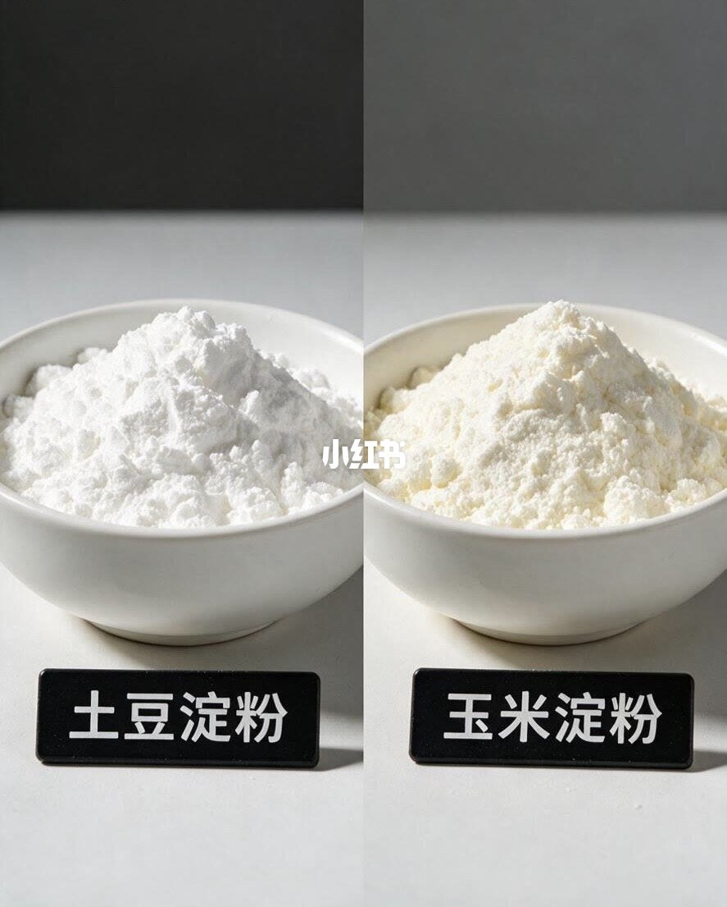
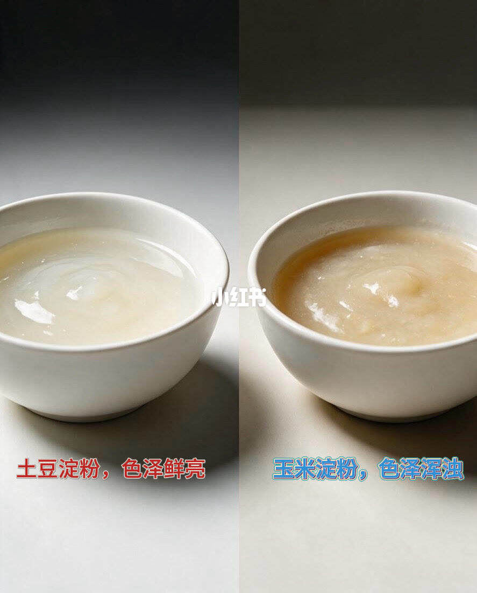
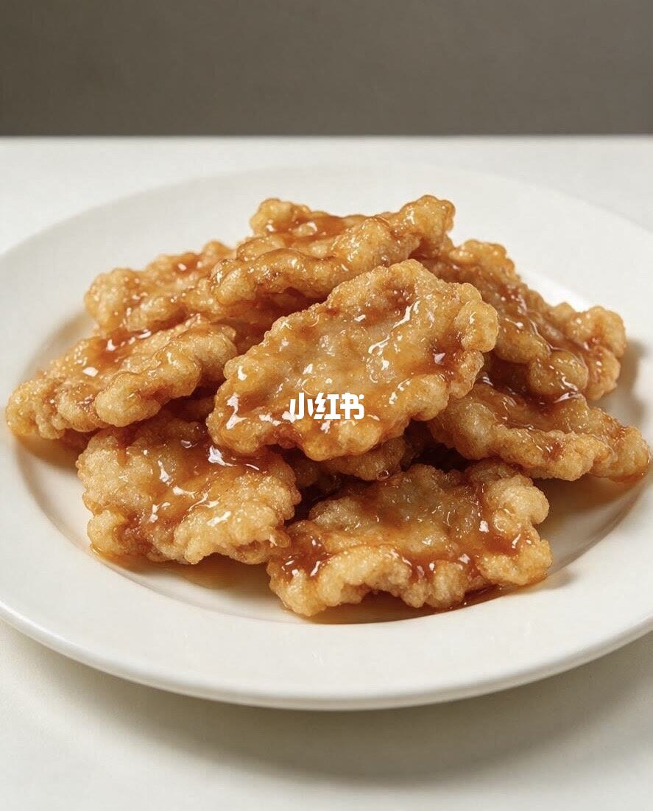
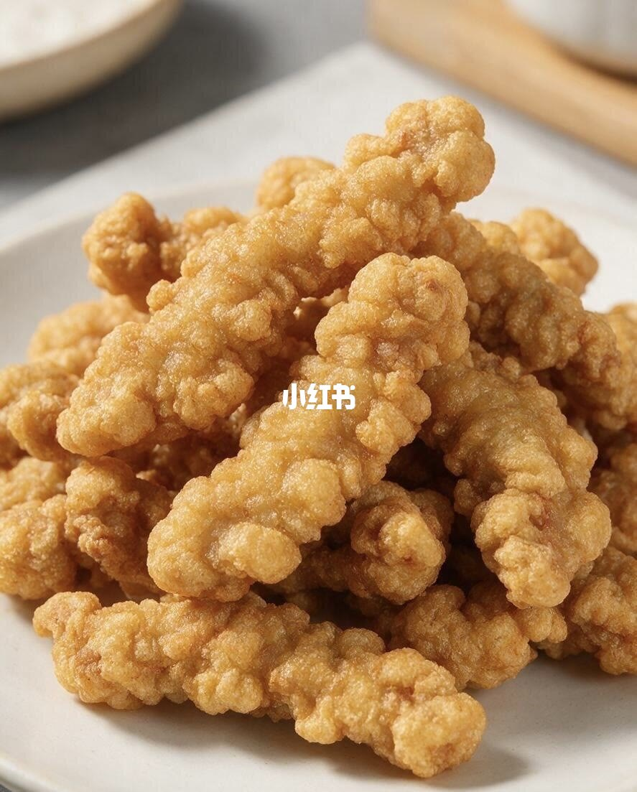

图文实录 · 小红书 · 爱吃🍠的小王
土豆淀粉和玉米淀粉，差别真的很大
差别在图上能指认的，主要是干粉颜色，以及糊化以后透不透。土豆淀粉干粉更白，糊更亮、更透；玉米淀粉干粉偏淡黄，糊更浑。炸菜和粉条、烘焙、上浆，图上没有并排对照。
1/4
干粉先看颜色

这一页是两只白碗。左边黑牌写「土豆淀粉」，粉很白，表面有反光，还有一些软块。右边黑牌写「玉米淀粉」，粉没有左边亮，带着一点淡黄，表面更哑。除此之外没有用法、没有比例。能确认的只有：装在碗里的两种干粉，颜色和表面不一样。
2/4
勾开以后，一亮一浑

碗里换成糊。左边半透明、表面亮，红字写「土豆淀粉，色泽鲜亮」。右边更不透明，偏黄米色，反光弱，蓝字写「玉米淀粉，色泽浑浊」。这是四页里唯一把「透」和「浑」写成结论的一页。图上没有写水的比例、加热温度，也没有写放了多久。
3/4
一盘带亮汁的炸片

白盘上是薄片炸物，外皮金黄、起泡，浇着透亮的琥珀色酱。除了小红书水印，没有别的字。笔记说明把土豆淀粉和锅包肉、炸酥肉放在一起，说挂糊更酥脆、凉了不回软。这一页本身没有写出菜名，也没有玉米淀粉的对照盘，看不出这盘用的是哪一种淀粉。
4/4
一盘外皮粗糙的炸条

白盘上堆着金黄条状炸物，外皮布满小颗粒，有油亮。同样没有菜名，没有「土豆」或「玉米」。说明里的「炸酥肉」和这一盘外形接近，但页上没有写出来，不能把外形直接当成用粉证明。
汇总
图上站住的，是颜色和透明度
干粉：第 1 页，土豆淀粉更白，玉米淀粉偏淡黄。糊：第 2 页，土豆淀粉被标成鲜亮，玉米淀粉被标成浑浊。这是标题「差别真的很大」在画面里有对照的部分。
第 3、4 页是两道炸菜成品，没有淀粉标签，也没有左右对照。说明里另外写了：土豆淀粉做粉条筋道；玉米淀粉用来腌肉上浆和做蛋糕、饼干；作者用的土豆淀粉是纯马铃薯提取。这些句子不在四张图上，图上也没有粉条、蛋糕或上浆肉。
边界：这是这篇笔记的对照和作者用法，不是两种淀粉的全部性质。凉了回不回软、酥脆能保持多久，图上没有时间记录。